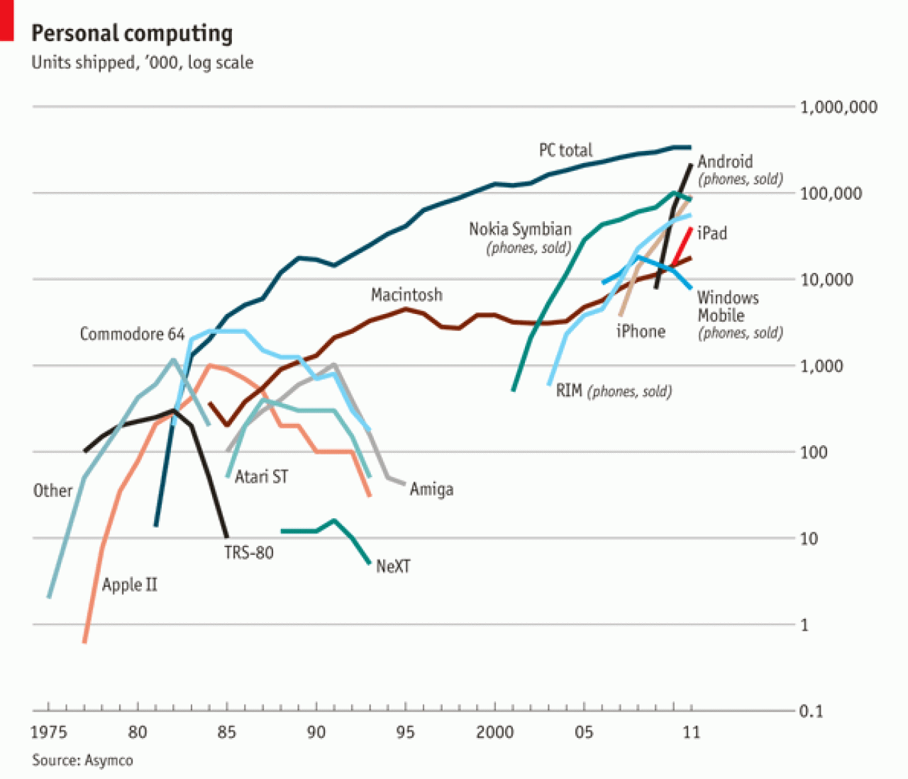

Samuel Burer
Last updated: January 29, 2020
Using linear regression to model a nonlinear relationship is synonymous with the idea of transforming variables
Transforming variables = transforming data
How to transform an independent variable…
How to transform the dependent variable…
You can do any transformation that you want; there are (too) many options
Since there are so many options, we need some guiding principles to point us towards transformations that make sense
Our examples will emphasize these principles
That is, different principles will suggest the same transformations

Source: economist.com
Source: WSJ
Inverses
Multiplication-Addition Rule
Power-Multiplication Rule
| Linear | Exponential | |
|---|---|---|
| Model | Y = α + βX | Y = αβX |
| Error | Y = α + βX + ε | Y = αβXexp (ε) |
| Fitted | Ŷ = a + bX | Ŷ = abX |
| Linear | Exponential | |
|---|---|---|
| Intercept | α, a | α, a |
| Slope | β, b | NA |
| Growth rate | NA | β, b |
| Linear | Exponential | |
|---|---|---|
| Error | “constant abs err” | “constant rel err” |
| Assumptions | NA | β > 0, b > 0 |
The (simple) exponential relationship is Y = αβX, where β > 0
β = growth rate
Growth rate examples
If β = 2, then Y is doubled when X goes up by 1, or Y is halved when X goes down by 1
Savings account that earns 2% per year (compounded yearly) has β = 1.02 (assuming X is measured in years)
A substance with a half-life of 1 second has β = 0.5 (assuming X is measured in seconds)
Terminology
Example: Absolute vs Relative
How do we mathematically incorporate constant relative error into an exponential regression model?
The answer is…
Y = αβXexp (ε)
Y = αβXexp (ε)
Just like in linear regression, ε is normal with mean 0, independent of X and Y
But here, the error has a multiplicative effect, not additive
Note: The mean of exp (ε) is ≈ 1
Step 1: Take LOG of both sides
Y = αβXexp (ε)
log (Y) = log (αβXexp (ε))
Step 2: Use Multiplication-Addition Rule
log (Y) = log (αβXexp (ε))
log (Y) = log (α) + log (βX) + log (exp (ε))
Step 3: Use Inverses Rule
log (Y) = log (α) + log (βX) + log (exp (ε))
log (Y) = log (α) + log (βX) + ε
Step 4: Use Power-Multiplication Rule
log (Y) = log (α) + log (βX) + ε
log (Y) = log (α) + Xlog (β) + ε
Step 5: Rearrange Slightly
log (Y) = log (α) + Xlog (β) + ε
log (Y) = log (α) + log (β)X + ε
The parameters in the linear regression are the LOG of the parameters in the exponential regression
Equivalently, calculate EXP of the linear parameters to recover the exponential parameters
| Exponential | Power | |
|---|---|---|
| Model | Y = αβX | Y = αXβ |
| Error | Y = αβXexp (ε) | Y = αXβexp (ε) |
| Fitted | Ŷ = abX | Ŷ = aXb |
| Exponential | Power | |
|---|---|---|
| Intercept | α, a | 0 or ± ∞ |
| Growth rate | β, b | NA |
| Elasticity | NA | β, b |
| Exponential | Power | |
|---|---|---|
| Error | “constant rel error” | “constant rel error” |
| Assumption | β > 0, b > 0 | X ≥ 0, β ≠ 0, b ≠ 0 |
Intercept
β = elasticity
β = elasticity
Source: nytimes.com
β > 0
β < 0
Errors behave as in exponential regression
Y = αXβexp (ε)
log (Y) = log (α) + βlog (X) + ε
So we must log X as well!
To recover the estimate of α from the linear regression, take EXP of of the intercept from the linear model
The estimate of β appears directly as the slope coefficient in the linear regression